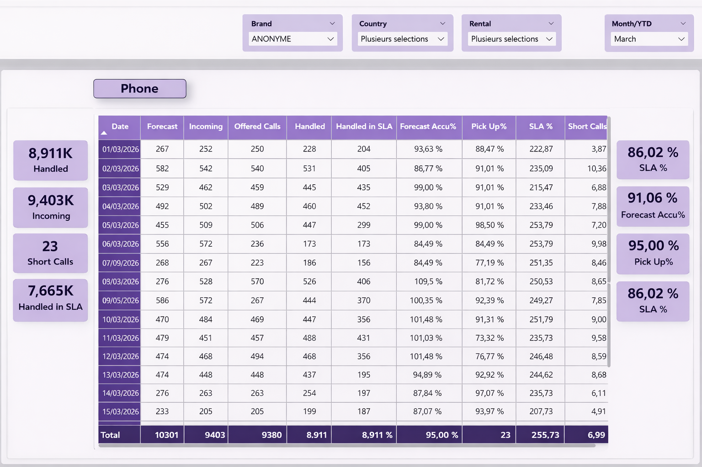
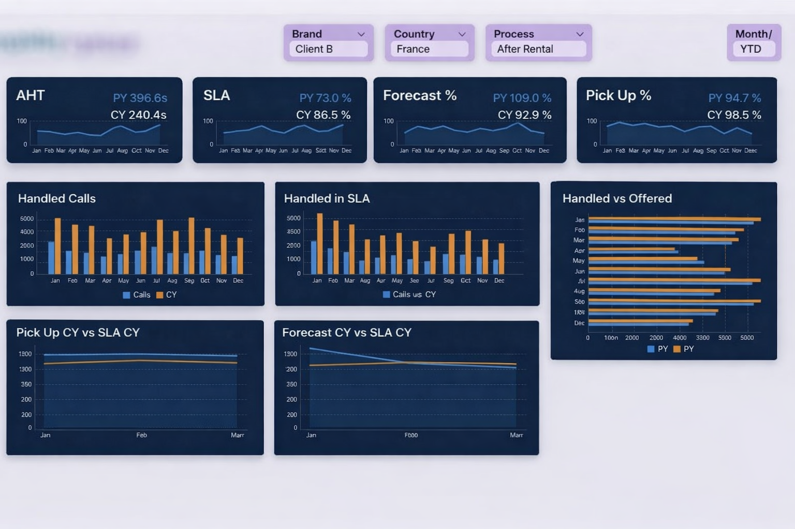
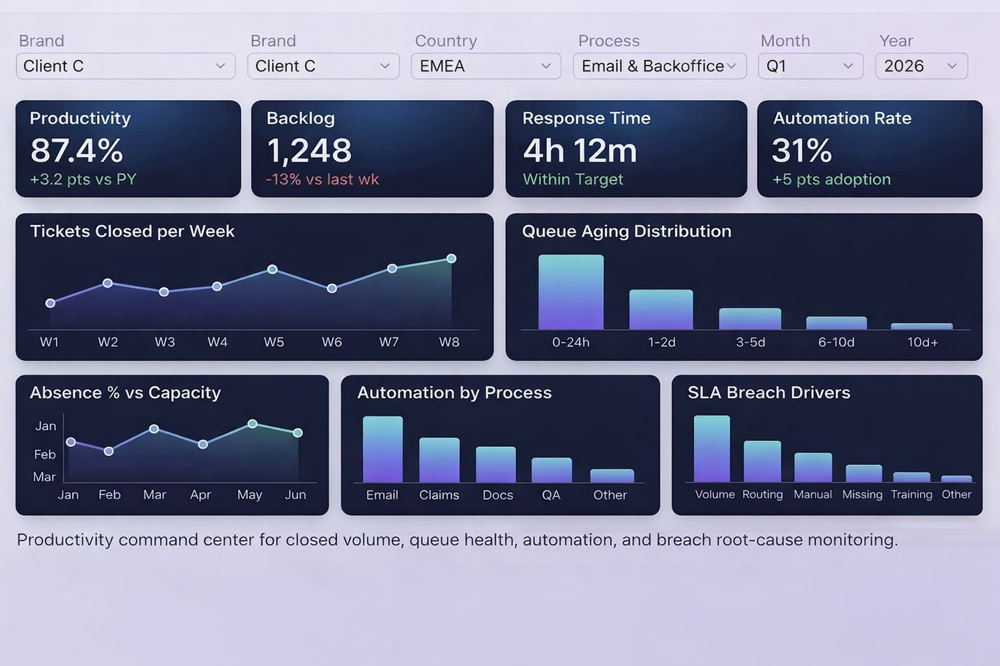
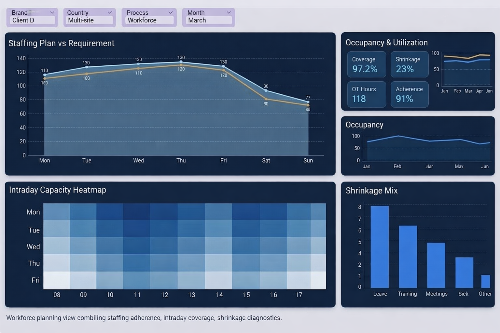

ÉTUDES DE CAS
Analyses basées sur la narration : problème, analyse, solution et impact mesurable
Chaque projet est présenté comme une mission de conseil. L'objectif est de rendre le raisonnement visible : dysfonctionnements initiaux, cadrage de l'analyse, refonte et changements observés.
Cas d'étude 01 · Opérations
Cockpit de performance service multi-pays
Résultat : revue opérationnelle accélérée
Le problème
Les équipes opérationnelles suivaient la performance via des fichiers fragmentés et des exports manuels. Les leaders voyaient les chiffres quotidiens, mais sans lien clair entre volume offert, appels traités, SLA et qualité de service.
Mon analyse
J'ai cartographié la chaîne de KPI de la demande entrante à la production, identifié les calculs redondants et séparé les indicateurs descriptifs des indicateurs de décision pour isoler le "bruit" et faciliter la gestion des exceptions.
Ma définition
Une structure de tableau de bord avec une discipline de filtrage, un tableau central de KPI et une hiérarchie métrique épurée afin que superviseurs et managers utilisent la même source de vérité lors des revues quotidiennes.
La solution
Conception d'un cockpit opérationnel combinant volume, SLA, décroché, DMT, précision de prévision et temps d'attente. Le reporting brut est devenu un outil de pilotage guidé de la performance.
Avant
- Consolidation manuelle de vues multiples
- Lecture incohérente des KPI par les parties prenantes
- Escalade lente en cas de dégradation du service
Après
- Couche de contrôle quotidienne unique
- Propriété claire des métriques et détection d'anomalies rapide
- Conversations managériales plus structurées
Cas d'étude 02 · Reporting Exécutif
Suivi des KPI exécutifs et simplification des tendances
Résultat : meilleure lisibilité décisionnelle
Le problème
Les tableaux de bord de la direction contenaient les bons chiffres, mais pas le bon parcours de lecture. Les cartes de tendances et graphiques mensuels n'étaient pas organisés pour soutenir une interprétation rapide lors des comités.
Mon analyse
J'ai examiné comment les parties prenantes consommaient l'information en réunion et quels KPI déclenchaient réellement des actions. Le problème était l'utilisabilité exécutive plutôt que la disponibilité des données.
Ma définition
Une mise en page descendante (top-down) avec des cartes KPI compactes, des panneaux de tendances et une section "traité vs offert" pour créer un récit visuel clair, du résumé au diagnostic.
La solution
Refonte de la page de reporting en un tableau de bord de synthèse utilisant un espacement cohérent et un cadrage comparatif Année N / Année N-1 pour répondre précisément aux questions de gestion.
Avant
- Forte densité sans ordre de lecture clair
- Trop d'efforts pour extraire les messages clés
- Revues mensuelles ralenties par la confusion visuelle
Après
- Synthèse exécutive percutante au premier coup d'œil
- Passage rapide de la vue d'ensemble à la cause racine
- Confiance accrue dans l'interprétation des KPI
Cas d'étude 03 · Banque
Tour de contrôle des opérations bancaires de détail
Résultat : contrôle du backlog et de la réactivité
Le problème
Un support bancaire gérait des files d'attente avec une visibilité limitée sur le backlog, les temps de réponse et l'apport de l'automatisation. Les managers réagissaient aux pics de volume sans pouvoir prioriser efficacement.
Mon analyse
J'ai décomposé le flux : réception des tickets, vieillissement des stocks, débit et risque SLA. L'analyse s'est concentrée sur les points de rupture de l'expérience client : vieilles files et déséquilibre de charge entre flux manuels et automatiques.
Ma définition
Une tour de contrôle avec productivité, backlog, distribution par âge des dossiers et taux d'automatisation. La structure a été conçue pour soutenir les managers opérationnels, pas seulement les équipes reporting.
La solution
Création d'un dashboard orienté décision alignant les métriques WFM sur des questions concrètes : avons-nous assez de personnel, où perdons-nous de la capacité et quelle est la stabilité de l'adhérence ?
Avant
- Variables de planification examinées séparément
- Trop d'interprétation manuelle en réunion
- Impact du shrinkage mal visualisé
Après
- Vue décisionnelle unifiée de la main-d'œuvre
- Meilleures conversations entre les équipes de planification
- Visibilité rapide sur les risques d'effectifs
Cas d'étude 04 · Workforce
Panel de planification : couverture, shrinkage et adhérence
Résultat : discipline de planification accrue
Le problème
Les données de planification existaient, mais les leaders manquaient d'une vue unique liant besoins en effectifs, couverture réelle, adhérence et capacité intraday. Les discussions étaient souvent réactives.
Mon analyse
J'ai identifié les variables clés : demande vs effectifs, réalité du planning vs prévu, et l'effet opérationnel du "shrinkage" (perte d'activité). Le but était de convertir des chiffres bruts en signaux de management.
Ma définition
Un panneau de contrôle combinant les tendances plan vs besoin, des cartes d'occupation et d'utilisation, ainsi qu'une heatmap de capacité intraday pour soutenir les décisions quotidiennes et hebdomadaires.
La solution
Création d'un dashboard orienté décision alignant les métriques WFM sur des questions concrètes : avons-nous assez de personnel, où perdons-nous de la capacité et quelle est la stabilité de l'adhérence ?
Avant
- Variables de planification examinées séparément
- Trop d'interprétation manuelle en réunion
- Impact du shrinkage mal visualisé
Après
- Vue décisionnelle unifiée de la main-d'œuvre
- Meilleures conversations entre les équipes de planification
- Visibilité rapide sur les risques d'effectifs
GALERIE DE TABLEAUX DE BORD
Ces interfaces ont été conçues à partir de rapports réels qui manquaient de structure.
Optimisés pour l'utilisabilité et la prise de décision. "Anonymisés pour confidentialité".
Vue Table Opérationnelle
Tableau de KPI quotidiens avec métriques latérales
Idéal pour les managers ayant besoin d'un contrôle détaillé avec filtres, lignes quotidiennes et totaux mis en évidence.

Synthèse Exécutive
Dashboard de direction avec cartes de tendances
Conçu pour accélérer les revues mensuelles grâce à des indicateurs compacts et une navigation simplifiée du résumé au détail.

Tour de Contrôle Bancaire
Backlog, vieillissement, productivité et automatisation
Axé sur les opérations de service bancaire où la vitesse de réponse et l'âge du backlog impactent directement l'expérience client.

Gestion du Workforce
Couverture, adhérence, capacité et shrinkage
Focus sur le contrôle des effectifs et la qualité de la planification, pour les responsables WFM et les parties prenantes opérationnelles.

RÉSUMÉ D'EXPÉRIENCE
Un parcours aligné sur la BI, l'analyse opérationnelle et la transformation du reporting
Analyste Reporting Données
Développement de dashboards, standardisation de KPI, analyse SQL, automatisation du reporting et aide à la décision en environnement d'entreprise.
Analyste Workforce Temps Réel
Suivi opérationnel, analyse intraday, visibilité des effectifs et support d'escalade rapide pour des équipes de service orientées performance.
Analyste IT
Travail sur la performance des processus, le support reporting, les opérations techniques et les activités liées aux données.
Spécialiste Support Technique IT
Support technique systèmes, matériel et logiciel, développant la rigueur opérationnelle appliquée ensuite aux rôles BI.
CONTACT
Disponible pour des rôles axés sur la BI, le reporting et les tableaux de bord
Ce portfolio est intentionnellement anonymisé. Les références d'entreprises sont masquées tout en conservant la crédibilité et l'orientation business du travail.